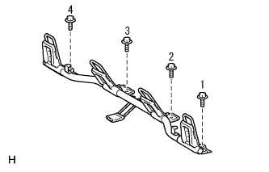

List of Assy (4WD) Installation |
| 1. Childrest Rested Seat Anka Bracket RH installation |
|  |
Temporarily tighten the four bolts.
Tighten the four bolts in the order of 1 → 2 → 3 → 4, and attach the Child Restless Seat Annica Bracket RH.
Attach the floor carpet.
| 2. List of back hinge SUB-ASSY RH installation |
 |
At the bolt, attach the rear seat back hinge RH.
| 3. List of back hinge SUB-ASSY LH installation |
At the bolt, attach the rear seat back hinge LH.
| 4. List seat cushion assessed |
 |
Pass the seat belt and make the hook.
Rena seat cushion Assy The clip at the front of the front.
| 5. List seat Batsuku ASSY installation |
 |
Put the rear seat back asser on the vehicle, tentatively attach the hole in the rear seat back frame and the location on the hinge side to temporarily attach the bolt.
Tighten the two bolts and attach the rear seat back Assessy.
Attach two new clips.